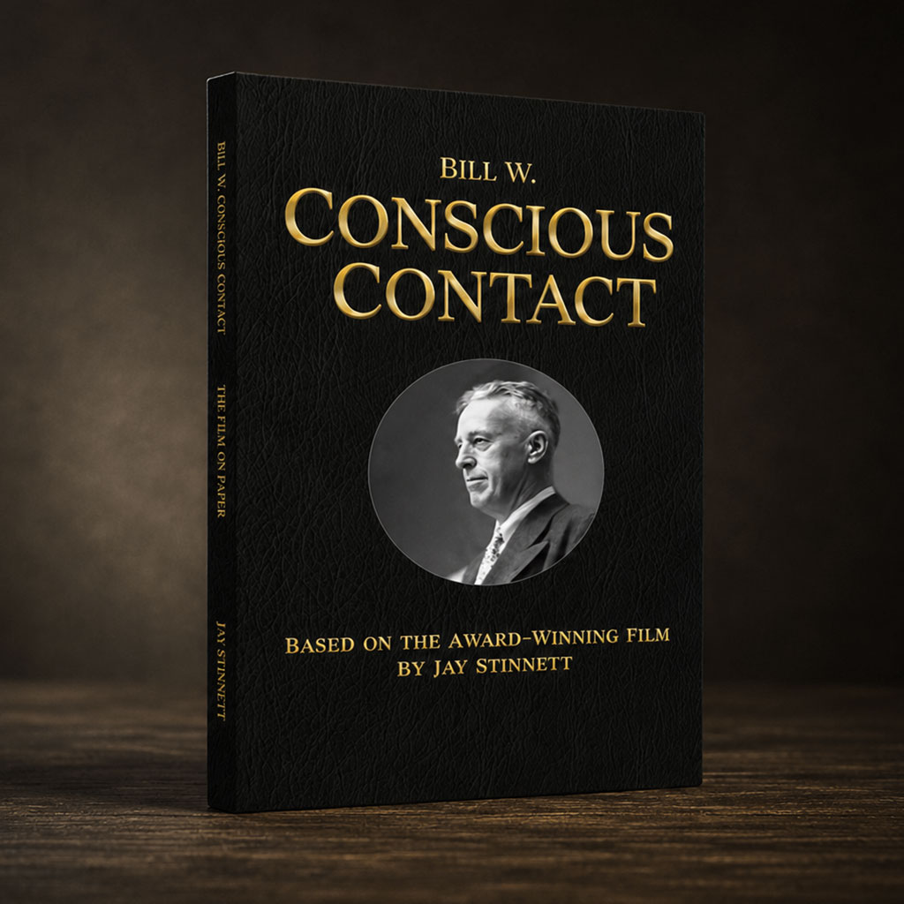

"In most cases, Grace leaks in little by little. Indeed, the mystic experience, so called, is the essence of the A.A.’s transformation."— Bill Wilson, letter to Mel B., July 1956
I didn’t write the 11th Step. It came to me as an inspiration.
Spiritus Contra Spiritum
Available in three editions, Bill W. Conscious Contact brings the award-winning documentary to the printed page — preserving every archival photograph, personal letter, and moment of revelation in a permanent, collectible format.
This photographic history offers stillness where the documentary provides motion. Through intimate photographs, we encounter a life that continues to resonate across generations.
Explore The Book
"This film shows deeper insight into Bill Wilson's life than I had ever seen before, and it is eye-opening in many ways. This film is a must-see for anyone interested in recovery."Allen Berger, PhDAuthor, Essential Insights for Emotional Sobriety
"It perfectly captures the enduring essence of A.A. founder, Bill Wilson — this humble man who wrote the book that has inspired the growth of Alcoholics Anonymous and in so doing saved millions of lives."Linda Farris Kurtz, MSW, DPAAuthor, Self-Help and Support Groups & Recovery Groups
"Really an amazing piece of filmmaking and, more importantly, a truly great and necessary contribution to the A.A. narrative."Charlie HavilandCofounder, Royal Starr Film Festival
"This beautiful pictorial work brings the idea of conscious contact to life in a deeply moving way. It gently reminds that connection with a Higher Power is not distant or abstract, but present and accessible."Gail LaCroixArchivist, Dr. Bob’s Home, Akron, OH
"In most cases, Grace leaks in little by little. Indeed, the mystic experience, so called, is the essence of the A.A.’s transformation."— Bill Wilson, letter to Mel B., July 1956